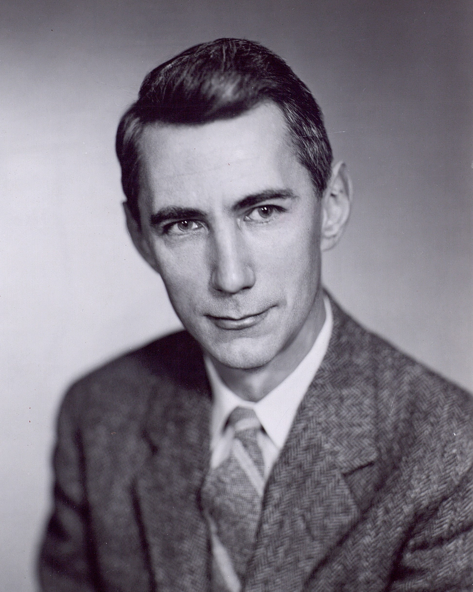
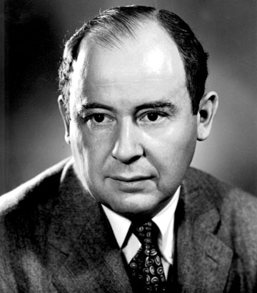
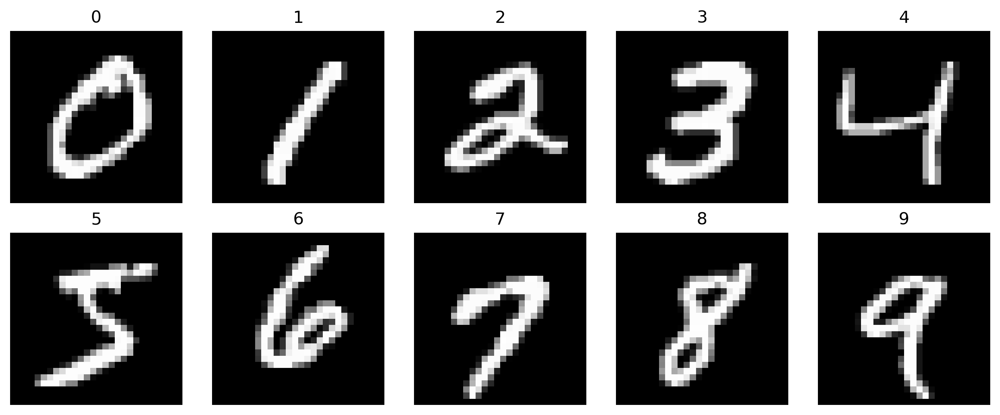
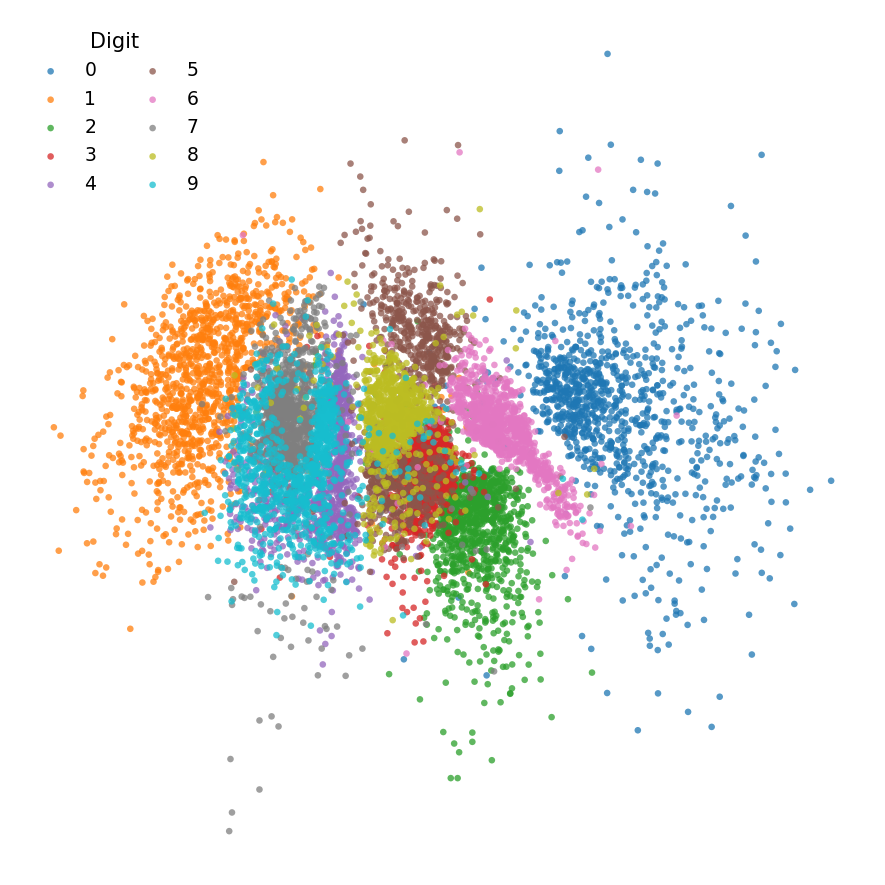
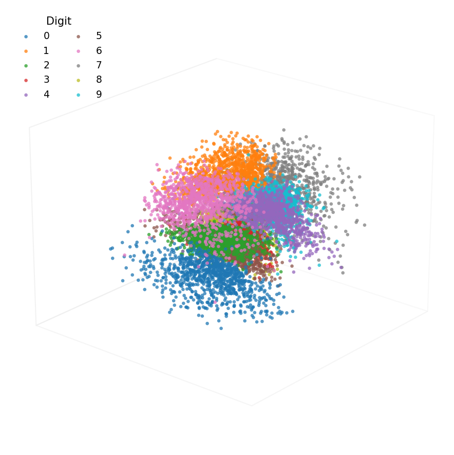
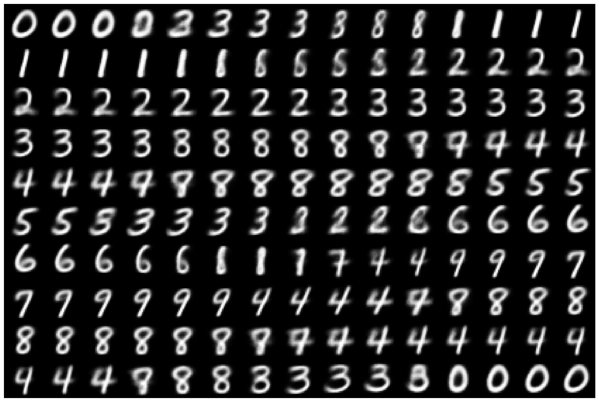

Machine-learning guide
Variational autoencoders
The thesis appendix retains the evidence lower bound, Gaussian latent distribution and reparameterisation equations. This page provides the extended information-theory background, generation examples and latent-space demonstrations.
Entropy and cross-entropy
Let X be a discrete random variable with probability distribution P and probability mass function p(x). Entropy measures the average uncertainty associated with the possible outcomes.
A distribution concentrated on one outcome has zero entropy. A more even distribution generally has greater entropy. Base-two logarithms express entropy in bits, while natural logarithms express entropy in nats.
Suppose that a distribution Q, with probability mass function q(x), approximates P. The cross-entropy is the expected coding cost when Q represents observations drawn from P.
Kullback-Leibler divergence
The difference between cross-entropy and the entropy of P is the Kullback-Leibler divergence.
What it measures: DKL(P‖Q) measures the expected extra logarithmic loss from using Q instead of P to describe observations drawn from P. It compares the probabilities assigned to the same outcomes, giving more weight to outcomes that occur more often under P. Assigning very little probability under Q to outcomes that are common under P incurs a large penalty.
For continuous distributions, the summation becomes an integral over their probability density functions.
The divergence is non-negative and equals zero only when the two distributions are equal almost everywhere. It is not a distance metric because it is directed and generally asymmetric.
A value of zero means the distributions match. Larger values indicate a greater mismatch in this direction; there is no universal threshold for an acceptable value. With natural logarithms, divergence is measured in nats. The two directions can sometimes be equal, even for different distributions, but equality does not hold in general.
Move and widen the approximation
Keep P fixed with mean zero and standard deviation one. Adjust the mean and standard deviation of Q, or animate its mean.
In a variational autoencoder, a KL term compares the approximate posterior for an observation with the chosen prior. Minimising this term encourages the latent distribution towards the prior, while the reconstruction term encourages retention of information about the input.
Historical note
A widely repeated anecdote describes how Claude Shannon settled on the term entropy for his measure of uncertainty. In the account recounted by Tribus and McIrvine, Shannon attributed the suggestion to John von Neumann:
“My greatest concern was what to call it. I thought of calling it ‘information’, but the word was overly used, so I decided to call it ‘uncertainty’. When I discussed it with John von Neumann, he had a better idea. Von Neumann told me, ‘You should call it entropy, for two reasons. In the first place your uncertainty function has been used in statistical mechanics under that name, so it already has a name. In the second place, and more important, no one really knows what entropy really is, so in a debate you will always have the advantage.’”
— Attributed to Claude Shannon, as recounted by Tribus and McIrvine in Energy and Information (1971).
Shannon subsequently stated in an oral-history interview that he was quite sure the exchange had not occurred. The account should therefore be treated as an anecdote rather than a verified transcript.


The reparameterisation trick
A deterministic autoencoder maps an observation to one embedding. A variational autoencoder maps the observation to the parameters of a probability distribution. A latent sample is drawn through the reparameterisation step and supplied to the decoder.
Watch a variational autoencoder learn
Follow a synthetic time series through the encoder, Gaussian parameters, sampling step and decoder. Play the recorded training to see the latent means and spreads change alongside the reconstructed signal. The diagram shows the forward pass. Playback smoothly interpolates between recorded training checkpoints.
Learned latent space
Coloured dots: means · black cross: selected sample · dashed grey: prior contour
Selected input and decoded sample
Solid maroon: input · dashed teal: reconstruction
The objective is summed squared reconstruction error plus 0.05 times the KL divergence to a standard-normal prior, averaged over observations. The reconstruction term encourages the model to retain differences between the input signals, while the KL term penalises deviations from the prior. These competing effects create a push and pull during training. In this example, the latent means initially spread apart and later shift back towards the centre with smaller adjustments. Both terms act throughout training, so the movement reflects their combined influence rather than separate outward and inward stages. Training need not make every posterior equal to the prior or decrease both terms at every step.
Data generation and visualisation examples
The MNIST dataset contains greyscale images of handwritten digits from zero to nine. Each image contains 28 × 28 pixels, so an image can be represented by 784 pixel values. The examples below use these images to illustrate how a variational autoencoder represents observations in a small latent space and decodes latent vectors into images.

Visualising the learned representation
A VAE with two or three latent dimensions can also be used to visualise the learned representation space. Each MNIST image was passed through the encoder, and the resulting mean vector was plotted as a point. Digit classes occupied overlapping but distinguishable parts of these spaces. The plots therefore showed the distribution of the posterior means, rather than sampled latent vectors or the full Gaussian distribution associated with each image.


Generating images between latent points
After training, the decoder converts a latent vector into an image. One way to generate images is to interpolate between two chosen latent points and decode the intermediate vectors, revealing how the generated image changes along that path.
The illustration below uses linear interpolation between consecutive digit-class centres in the three-dimensional latent space. Equally spaced points are placed along the straight line between each pair of centres, and each point is passed through the decoder. The resulting images illustrate the transition between the endpoints. The interpolation takes place in the latent space; the images are produced by the decoder.

Sources
- Cover and Thomas, Elements of Information Theory, 1999.
- Tribus and McIrvine, Energy and Information, 1971.
- Kingma and Welling, Auto-Encoding Variational Bayes, 2014.